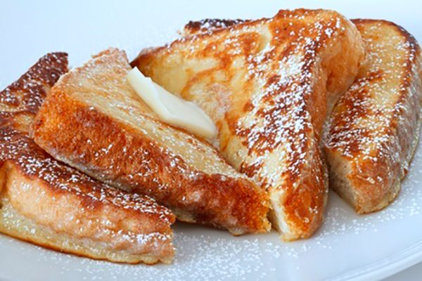

Very Vanilla French Toast Recipe

Very Vanilla French Toast
These French toast slices have vanilla flavor from convenient pudding mix,
plus hint of cinnamon.
Ingredients
- 1/2 tsp ground cinnamon
- 2 tsp. butter
- 1 large egg
- 1 cup whole milk
- 1 pkg. 3 oz "Cook and Serve" vanilla pudding mix
- slices of Texas toast bread
Steps
- In large bowl, whish milk, pudding mix, egg, and cinnamon for 2 minutes.
- In large cast iron or other heavy skillet, melt butter over medium heat.
- Dip toast in pudding mixture, coating both sides.
- Cook the bread on both sides until golden brown.